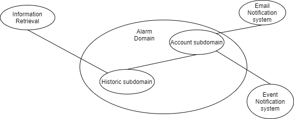

Pattern Implementations
Domain-Driven Design
Domain and subdomains
For our scenario of alarm creation earlier we defined a simple flow here we show the domains:
We have two core subdomains and the rest offers support. Alarms are created within the account subdomain but are periodically checked out by the historic subdomain, these systems are supported through the information retrieval to know if the information is up-to-date and both the notifications systems.